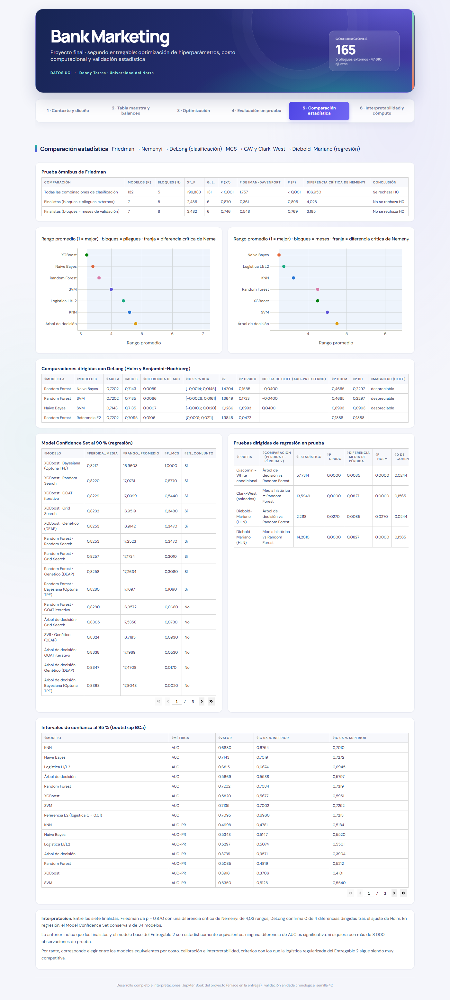

Pestaña 5 · Comparación estadística#
La quinta pestaña resume la secuencia jerárquica de pruebas: Friedman, Nemenyi y DeLong en clasificación; Model Confidence Set, Giacomini-White, Clark-West y Diebold-Mariano en regresión.

Las figuras son interactivas (se puede pasar el cursor sobre ellas) y las interpretaciones usan las mismas cifras que el dashboard y que el cuaderno.
| Comparación | Modelos (k) | Bloques (N) | χ²_F | g. l. | p (χ²) | F de Iman-Davenport | p (F) | Diferencia crítica de Nemenyi | Conclusión |
|---|---|---|---|---|---|---|---|---|---|
| Todas las combinaciones de clasificación | 112 | 5 | 177,122 | 111 | < 0,001 | 1,875 | < 0,001 | 89,372 | Se rechaza H0 |
| Finalistas (bloques = pliegues externos) | 7 | 5 | 3,171 | 6 | 0,787 | 0,473 | 0,822 | 4,028 | No se rechaza H0 |
| Finalistas (bloques = meses de validación) | 7 | 8 | 6,750 | 6 | 0,345 | 1,145 | 0,353 | 3,185 | No se rechaza H0 |
| Modelo A | Modelo B | AUC A | AUC B | Diferencia de AUC | IC 95 % BCa | z | p crudo | delta de Cliff (AUC-PR externo) | p Holm | p BH | Magnitud (Cliff) |
|---|---|---|---|---|---|---|---|---|---|---|---|
| SVM | Random Forest | 0,7239 | 0,7202 | 0,0038 | [-0,0046; 0,0128] | 0,8356 | 0,4034 | -0,0400 | 0,4034 | 0,4034 | despreciable |
| SVM | Naive Bayes | 0,7239 | 0,7143 | 0,0097 | [-0,0009; 0,0204] | 1,7666 | 0,0773 | -0,1200 | 0,2319 | 0,1546 | despreciable |
| Random Forest | Naive Bayes | 0,7202 | 0,7143 | 0,0059 | [-0,0014; 0,0145] | 1,4204 | 0,1555 | -0,0400 | 0,3110 | 0,2073 | despreciable |
| SVM | Referencia E2 | 0,7239 | 0,7095 | 0,0144 | [0,0113; 0,0175] | 8,8748 | 0,0000 | — | 0,0000 | 0,0000 | — |
| modelo | perdida_media | rango_promedio | p_MCS | en_conjunto |
|---|---|---|---|---|
| XGBoost · Bayesiana (Optuna TPE) | 0,8217 | 14,4806 | 1,0000 | True |
| XGBoost · Random Search | 0,8220 | 14,5922 | 0,8770 | True |
| XGBoost · Grid Search | 0,8232 | 14,4952 | 0,2860 | True |
| XGBoost · Genético (DEAP) | 0,8253 | 14,4659 | 0,2860 | True |
| Random Forest · Random Search | 0,8253 | 14,7380 | 0,2860 | True |
| Random Forest · Grid Search | 0,8257 | 14,6738 | 0,2610 | True |
| Random Forest · Genético (DEAP) | 0,8258 | 14,7567 | 0,2610 | True |
| Random Forest · Bayesiana (Optuna TPE) | 0,8280 | 14,6599 | 0,0990 | False |
| Árbol de decisión · Grid Search | 0,8305 | 14,9356 | 0,0640 | False |
| SVR · Genético (DEAP) | 0,8324 | 14,2982 | 0,0850 | False |
| Árbol de decisión · Genético (DEAP) | 0,8347 | 14,9474 | 0,0140 | False |
| Árbol de decisión · Bayesiana (Optuna TPE) | 0,8368 | 15,1944 | 0,0010 | False |
| Árbol de decisión · Random Search | 0,8379 | 15,0322 | 0,0010 | False |
| SVR · Random Search | 0,8454 | 14,9962 | 0,0090 | False |
| SVR · Bayesiana (Optuna TPE) | 0,8455 | 14,9584 | 0,0280 | False |
| Ridge · Random Search | 0,8486 | 15,2859 | 0,0010 | False |
| SVR · Grid Search | 0,8495 | 14,9638 | 0,0310 | False |
| Ridge · Bayesiana (Optuna TPE) | 0,8496 | 15,3520 | 0,0010 | False |
| Ridge · Genético (DEAP) | 0,8497 | 15,3923 | 0,0010 | False |
| Ridge · Grid Search | 0,8498 | 15,4503 | 0,0010 | False |
| KNN · Genético (DEAP) | 0,8504 | 15,2691 | 0,0100 | False |
| KNN · Random Search | 0,8513 | 15,2999 | 0,0050 | False |
| Media histórica (referencia) | 0,8514 | 14,6797 | 0,0400 | False |
| KNN · Bayesiana (Optuna TPE) | 0,8515 | 15,2949 | 0,0050 | False |
| KNN · Grid Search | 0,8523 | 15,2950 | 0,0040 | False |
| Lasso · Genético (DEAP) | 0,8549 | 15,2424 | 0,0140 | False |
| Lasso · Grid Search | 0,8556 | 15,3735 | 0,0130 | False |
| Lasso · Bayesiana (Optuna TPE) | 0,8557 | 15,4196 | 0,0120 | False |
| Lasso · Random Search | 0,8569 | 15,4569 | 0,0130 | False |
| Prueba | Comparación (pérdida 1 − pérdida 2) | Estadístico | p crudo | Diferencia media de pérdida | p Holm | d de Cohen |
|---|---|---|---|---|---|---|
| Giacomini-White condicional | Árbol de decisión vs Random Forest | 57,7314 | 0,0000 | 0,0085 | 0,0000 | 0,0244 |
| Clark-West (anidados) | Media histórica ⊂ Random Forest | 13,5949 | 0,0000 | 0,0827 | 0,0000 | 0,1565 |
| Diebold-Mariano (HLN) | Árbol de decisión vs Random Forest | 2,2118 | 0,0270 | 0,0085 | 0,0270 | 0,0244 |
| Diebold-Mariano (HLN) | Media histórica vs Random Forest | 14,2010 | 0,0000 | 0,0827 | 0,0000 | 0,1565 |
| Modelo | Métrica | Valor | IC 95 % inferior | IC 95 % superior |
|---|---|---|---|---|
| KNN | AUC | 0,6880 | 0,6754 | 0,7010 |
| Naive Bayes | AUC | 0,7143 | 0,7019 | 0,7272 |
| Logística L1/L2 | AUC | 0,6815 | 0,6674 | 0,6945 |
| Árbol de decisión | AUC | 0,5669 | 0,5538 | 0,5797 |
| Random Forest | AUC | 0,7202 | 0,7084 | 0,7319 |
| XGBoost | AUC | 0,5592 | 0,5460 | 0,5729 |
| SVM | AUC | 0,7239 | 0,7109 | 0,7358 |
| Referencia E2 (logística C = 0,01) | AUC | 0,7095 | 0,6960 | 0,7213 |
| KNN | AUC-PR | 0,4998 | 0,4781 | 0,5184 |
| Naive Bayes | AUC-PR | 0,5343 | 0,5147 | 0,5520 |
| Logística L1/L2 | AUC-PR | 0,5297 | 0,5074 | 0,5501 |
| Árbol de decisión | AUC-PR | 0,3739 | 0,3571 | 0,3904 |
| Random Forest | AUC-PR | 0,5035 | 0,4819 | 0,5212 |
| XGBoost | AUC-PR | 0,3693 | 0,3491 | 0,3864 |
| SVM | AUC-PR | 0,5384 | 0,5163 | 0,5595 |
| Referencia E2 (logística C = 0,01) | AUC-PR | 0,5484 | 0,5264 | 0,5685 |
| KNN | RMSE (log) | 0,9342 | 0,9155 | 0,9531 |
| Ridge | RMSE (log) | 0,9375 | 0,9179 | 0,9576 |
| Lasso | RMSE (log) | 0,9459 | 0,9281 | 0,9645 |
| Árbol de decisión | RMSE (log) | 0,9166 | 0,8992 | 0,9352 |
| Random Forest | RMSE (log) | 0,9120 | 0,8953 | 0,9298 |
| XGBoost | RMSE (log) | 0,9298 | 0,9113 | 0,9485 |
| SVR | RMSE (log) | 0,9639 | 0,9426 | 0,9841 |
Interpretación. Entre los siete finalistas, Friedman da p = 0,787 con una diferencia crítica de Nemenyi de 4,03 rangos; DeLong confirma 1 de 4 diferencias dirigidas tras el ajuste de Holm. En regresión, el Model Confidence Set conserva 7 de 29 modelos.
Lo anterior indica que varias diferencias entre los mejores modelos no superan la variabilidad entre periodos; con más de 8 000 observaciones de prueba, DeLong detecta diferencias pequeñas que importan poco en la práctica.
Por tanto, corresponde elegir entre los modelos equivalentes por costo, calibración e interpretabilidad, criterios con los que la logística regularizada del Entregable 2 sigue siendo muy competitiva.